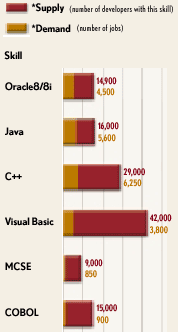

How to really enjoy your work and make good
money at the same time?

What matters most is
how you see yourself |
The key: Learn NEW technologies
which are IN DEMAND by LARGE companies
Select right technologies to specialize
in. If you want to target higher
salaries, it is important to find what is in demand on the market right
now - and what will be in demand in a year from now. How to find the answer?
Ask agents. Employment agents.
Important:
Don't stick with what you were
learning five or ten years ago
ask agents what their clients are looking for
today.
Today programming is a highly paid profession ( www.realrates.com
). There is not enough programmers on the market today - that's why
it is possible to get high compensation as a programmer. Ten years from
now it may be something else (gene engineering, for example). Important
thing is to know what is in demand. |
Here is a simple secret:
Look for a hungry crowd with money.
From this crowd you pick the largest, the
richest.
Then you find exactly what they are
starving for.
Then you position yourself as somebody who
can give them what they want.
That's it.
|
Target large companies
If you want to make big money working as an employee or consultant -
then to maximize your income you should work only at large companies.
They have lots of money to pay high salaries. Small businesses, on
the contrary, will not be able to afford to pay you the salary you want.
As a matter of reference, current rates for programmers
on Wall Street (Summer 2001):
-
Beginner ~$60K/year.
-
Typical developer with 3-5 years of experience (for
example, Senior Java developer for some brokerage project) - $80K - $120K
base + 5 - 50% bonus.
-
Typical corp-to-corp individual consultant
- ~$100/hour ($75 - $130 range).
-
Individual consultant with unique or rare expertise
in some new expensive enterprise technology - ~$200/hour (I've seen up
to $350/hour).
-
Typical payment to a consulting firm for some middleware
project (CRM, etc.) - $200 - $250/hour per worker.
OK, for today we selected programming for large companies (in NY
City especially in 3 areas - finance, publishing, advertising). So you
have to find out what technologies they are using.
Now, let's narrow down the technologies.
As of today (Summer 2001) the most in-demand general (not package specific)
technologies are:
-
Database (DB2, Sybase, Oracle, other SQL databases - especially
if person can migrate data cross-platform).
-
Unix OS (Solaris) - the most common operating system in financial
world
-
EAI (Enterprise Application Integration) - CRM, ERP, etc. packages
-
cross-platform integration experience
-
C++ / Java (especially server side - trading systems, application
servers like WebLogic, WebSphere, Dynamo, iPlanet).
-
xml/xsl, SOAP
-
project-management-oriented experience or certifications, security-oriented
experience or certifications
-
Internet technologies (HTML,Javascript, Perl/CGI)
-
Financial industry experience (talk the talk)
Technology requirements are constantly changing. In 1999 anybody
who would say that he/she knows (or even just likes to learn) HTML would
be hired. After collapse of dot-coms in 2000, nobody is interested in HTML.
EAI (Enterprise Application Integration) is the king now (ERP, CRM, PRM,
etc.)
Java was very hot in 2001, but today (Summer 2001) it dropped to the
level of Perl.
C++ stays strong.
I thought that wireless technologies would be in big demand (delivering
stock quotes to cellular phones and PDAs), but it is not happenning. At
least not on the market of big financial firms. Wireless is used
- but usually it comes as an extra feature with some sort of CRM or other
package that the company buys. So although there is some market for this
development - it is not a mainstream. May be situation will be different
in 2002 ?
|  |
The picture on the left (from TechForce
2000 survey covering 450,000 IT professionals and 1,600 companies)
shows demand for several common technologies. (1st in demand - Java, then
go Oracle and C++).
This picture doesn't include everything. For example, front end technologies
(HTML/Javascript) are in high demand everywhere. Perl is also going very
strong.
This picture also shows, that demand for COBOL (Mainframe) and
MCSE (Microsoft specialists) became low. |
Target large companies
Big money is paid by big companies - especially financial. Dot-coms
come and go - but financial world stays hungry for brains. And it has money
to pay.
Target expensive software packages
Well, this advice definitely works, although it is not something I am
necessarily recommending or doing myself. The idea is, that if a
big company has just spent a million dollars (I've seen 30 mln / piece)
for the software license - they will pay handsomely to make it work.
The package may be an AS (Application Server), or an ERP (Enterprise Resource
Planning) system, or CRM (Customer Relationship Management), or a content
management system, or messaging system, a big enterprise-level database
(DB2), or something else. What the system actually does is not important.
Important is that the system is VERY EXPENSIVE.
Target new technologies
If the system is NEW, then there is almost no specialists available,
i.e. there is very low competition to you. You can easily land this job
if you just spend some time to learn this new technology.
Generally avoid technologies which are taught
everywhere
If technology is taught everywhere - chances are that it was on the
market long enough so that there is a lot of specialists available and
competition is tough.
The best, of course, may be to become a specialist
in a technology which is both NEW and EXPENSIVE.
But how to find a technology (package) like that?
Well, it is easy. Just visit web sites of existing vendors of
expensive packages - and see if they have NEW EXPENSIVE products. Look
for this information in the news and reviews. Try talking to managers.
Pretty soon you will get several products to choose from.
Search for more development and less maintenance
in job descriptions.
Position yourself as an architect.
Development of new systems:
- is much more interesting and pleasant work than maintenance
of old systems.
- it allows you to work with new interesting technologies and
improves your resume significantly.
- it is less stressful than maintenance
- it is paid much better.
Maintenance:
- gives much less freedom in your work.
- gives less chances to grow professionally.
- is not exciting or interesting. You have to dig through
miles of somebody else's code without documentation and resolve production
problems. Plus you are always under pressure from clients. You spend too
much time to become a specialist in a particular implementation in a particular
department - a qualification which is of little use for other potential
clients.
- is paid less than development.
Use Internet for self education.
By the time the field (technology) becomes mature enough on the market,
there is usually a lot of information freely available on the Internet
which you can use for your self education. FAQs, tutorials, documentation,
free downloads, etc.
Also check this my page:
Online Tutors &
FAQs
Use interviews for self education.
Many people are afraid of interviews, because they concentrate on what
can go wrong, questions they may not answer, etc. Then after the
interview they would worry that they said something wrong. Or, on
the contrary, expect to receive an offer because they said something right.
The truth is, you can't control whether you will get the job or not.
* Sometimes you will be the best for the job,
and interview will go excellent - but you don't get the job.
* Sometimes you will have the worst interview
of your life - and get the job. |
As you see, it is very difficult to predict the results logically. And
statistically only one out of 10 or 20 (or more) interviews will result
in hiring. So most probably when you are going on the interview -
you will not be hired. It is not bad - it is just how the things are.
So relax and don't think too much about one interview. Just schedule
many interviews. If you make 2 interviews daily (10 weekly, 40 in
a month) - you will get a job, simply because market is very hungry. It
can take several weeks. Or 1-2 months. May be more. It
is just statistical game.
When you are going on the interview - don't think whether you will be
hired or not. Instead plan to use this interview for your own benefit.
How?
Interview is an opportunity to learn,
to get training,
to make new friends.
Just think about it. You will be interviewed for 30+ min by a
specialist in his field. Not by a trainer at computer courses, who
teaches because who can't do real work. No, you will speak with a real
professional. A person who was thinking about his project, technology,
different ways to proceed. And he/she will tell you (for FREE) what
their team is doing, why, what their plans are, what they are looking for.
If you take out your notepad and start writing this stuff - you will learn
a lot. Later at night you can go on the Internet, find all the subjects
he/she was talking about and review them.
This is free and very effective education.
After each interview you will grow. Good thing is that you get
this education regardless of whether you will be hired or not. After a
month going on interviews you will know all the buzz words. You will
learn to "talk the talk". It doesn't mean that you can "walk the
walk". But, at least, you can now present yourself much better.
Also during the interview you will be asked to tell about yourself and
the projects you worked in. First time it may be difficult to find right
words - but after several interviews all the answers will become automatic.
Finally, it is very important to make good
exit. Your goal is to convey the message that you would
like to work on this job. You should say that
you
like the person, you like
the team, you like the project, you
like the organization,
you like
everything, and that you will be happy to work with them. You
should wang your tail like a dog.
Then you smile, shake hands - and leave.
So, the results are:
- you have learnt something new
- you've got training in selling yourself
- you've got a chance (small) to be hired
- you had good time and made new friend(s)
When you get home - you send an email to the person who interviewed
you (you got it from him in the beginning, don't you?). You say again
how you like to work as part of his team.
Then you forget about this interview
and don't worry about the results -
just go on other interviews.
And one more thing:
Don't discuss money on the interview
(especially on the first interview).
Say that this is something they could discuss later (and they better
do it with your agent). Absolutely refuse to discuss this topic.
You can tell that you feel awkward discussing money before you know what
the job and responsibilities are, and before they made a decision whether
you are a good fit or not. You can tell that you know the market and you
want a competitive offer. You can tell that they (your potential
employer) probably are not interested in paying you too little (because
then they can't keep you for too long). And you understand that they
can't afford to pay you too much. So it should be reasonable market
value. But don't give any numbers - refer them to your agent.
There are more interview tips here:
- job_interview.html
- job_interview_questions.html
Use internet to help yourself in job search.
I used very simple methods to get many interviews fast.
* job_tips.html - how to make your phone
ring
* job_interview.html - interview tips
There are estimated 100,000 web sites devoted to job hunting.
They serve several functions: job listings from employers, posting of resumes,
career counseling, research on fields, occupations, companies, cities,
contacts, etc. ). I compiled a list of sites which may be useful
if you are looking for your first job or if you are planning to relocate.
I used just couple of those sites - and only once to find my first corporate
full time job (after that I got into databases - and started to receive
job offers every day).
* job_links.html - many links to job search
related sites
* www.justperljobs.com -
perl jobs
Work from home.
There are many sites which can help you to find odd jobs to do from
home.
For example:
* www.guru.com -
* www.elance.com -
* www.thecentralmall.com-
How to survive the layoff crisis 2000..2002.
I was asked to write few words about this. It is funny, because I don't
have any problems surviving. I am getting several job offers every day.
And I know many people around me who increased their compensations despite
"hard times".
Come on, guys. You are spoiled with the market. Think about insurance
sales agents. Do they receive calls every day offering them new orders?
Or what about accountants? Their market is tough, because it is old and
saturated, and now they have to compete with software packages and online
services.
The market for programmers is much better. In fact, it continues to
be excellent. But you have to know how to approach it.
Yes, it is true that companies have laid off lots of programmers and
rates in some areas went down. But this is something we should be expecting
and be prepared for.
My principle is very simple:
"Quit before you get fired".
Let me explain.
Here are 3 periods you will see all the time.
PRE-period - A technology
is is not widely accepted. Venture capital is not here yet. This
period may last for years and decades. The area may be interesting from
technology point of view, but salaries are not high.
FAST GROWTH period
- everybody suddenly wants this technology. There is not enough specialists
on the market. There aren't enough books or training courses. Companies
are paying obscene money to get specialists - and still there are not enough
of them. Anybody who is breathing and mentions this technology in the resume
or simply tells that he wants to work in this direction will easily get
a job.
AFTER-period - market
is flooded with specialists. Rates go down - and it is difficult to get
jobs even at those low rates, because the specialists have become a commodity.
There are ten courses advertised in every newspaper. There are countless
books on the subject. There are tens of magazines. There are software packages
allowing a 13 year old to do the job. There are web sites providing the
service at a very low rate.
You want to be in the "FAST GROWTH" sector?. Sure. But how?
The answer is, of course, very simple.
You should expect that the FAST GROWTH period will end pretty
soon (~ 2 years max.). So you will have to change the specialization
- and become a specialist in another technology which will get into FAST
GROWTH next. You should do research of what will come next. You
should learn the technology in advance and position yourself so that when
the time comes - you are ready.
You can either try to predict where to go next - or just closely follow
the market. It is difficult to predict, sometimes, but it is always
easy to follow the market - all you have to do is to ask simple questions,
for example:
- what technologies seems to be in very high demand for this/next
year?
- what technologies are very very well paid.
- what new companies, groups or departments are being created?
(or planned to be created) - and what technologies?
Don't limit yourself to just programming. Look at joins with other industries.
Here is a list of coming "hot jobs" from http://smartmoney.com/consumer/index.cfm?story=working-june02.
See if it will give you some ideas:
| Bioinformatician* Wireless Engineer* Forensic Accountant* Speech Pathologist*
Data Miner* Home-Care Nurse* A.I. Programmer* Adventure Travel Guide* Fuel-Cell
Engineer* Intellectual-Property Attorney |
Talk to agents. Talk to other specialists. Talk to managers. Read the
news. Follow the trends. Search the Internet. Learn new things. Constantly
invest in changing yourself and your definition as a specialist.
Try to be on top of the market (or at least not far behind the market).
Quit BEFORE you are fired. Change your skin. Grow. Evolve.
Good luck.
----------------------------------------------------------